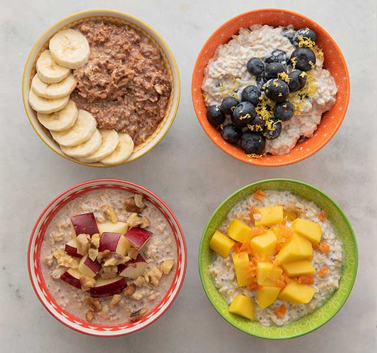

Overnight Oats

Description
Simple, quick and cheap, my overnight oats will
have you thinking about me all night until you
can open up the fridge and eat me up!
Ingredients
- 50g Rolled Oats
- 1 banana, chopped
- 1 scoop of protein powder of choice
- 50g frozen berries
- 120ml milk of choice
Steps
- Combine oats, milk, and protein powder in a bowl and mix until combined
- Add banana and berries
- Cover and soak in the fridge for at least 2 hours
back